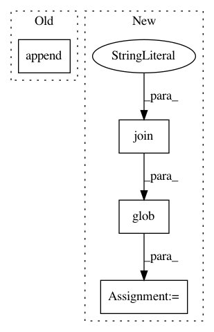

3ecb4a4df1def4c9496bd676adad3564f746a02d,innerfidelity/innerfidelity_transformation.py,,main,#,19
Before Change
// legend.append(names[i])
plt.plot(f, diff.raw)
legend.append("Mean smoothed")
plt.xlabel("Frequency (Hz)")
plt.semilogx()
plt.xlim([10, 30000])
After Change
def main():
models = dict()
for file_path in glob(os.path.join("transformation", "*.jpg")):
print(file_path)
file_path = os.path.abspath(file_path)
file_name = os.path.split(file_path)[-1]
file_name = file_name.split(".")[0]
name, kind = file_name.split("_")
if name not in models:
models[name] = dict()
with open(file_path, "rb") as f:
model = os.path.split(file_path)[-1].split(".")[0]
im = Image.open(file_path)
// Add -1px to left and top, +1px to right and bottom of tight crop box in parse_innerfidelity
fr = ImageGraphParser.parse_cropped(
im,
name=model,
f_min=10,
f_max=20000,
a_min=-50,
a_max=20
)
fr.interpolate()
models[name][kind] = fr
diffs = []
names = []
for model, frs in models.items():
diffs.append(frs["before"].raw - frs["after"].raw)
names.append(model)
diffs = np.vstack(diffs)
diff = np.mean(diffs, axis=0)
f = models[list(models.keys())[0]]["before"].frequency
diff = FrequencyResponse(name="Innerfidelity Transformation", frequency=f, raw=diff)
diff.smooth(window_size=1/9, iterations=10)
diff.raw = diff.smoothed
diff.smoothed = np.array([])
fig, ax = plt.subplots()
legend = []
for i, d in enumerate(diffs):
fr = FrequencyResponse(name=names[i], frequency=f, raw=d)
plt.plot(f, fr.raw)
legend.append(names[i])
plt.xlabel("Frequency (Hz)")
In pattern: SUPERPATTERN
Frequency: 3
Non-data size: 4
Instances
Project Name: jaakkopasanen/AutoEq
Commit Name: 3ecb4a4df1def4c9496bd676adad3564f746a02d
Time: 2018-07-08
Author: jaakko.o.pasanen@gmail.com
File Name: innerfidelity/innerfidelity_transformation.py
Class Name:
Method Name: main
Project Name: deepchem/deepchem
Commit Name: 719e4bc93e0c56d60ac80a875113de7e8d76e915
Time: 2015-12-16
Author: evan.n.feinberg@gmail.com
File Name: deep_chem/utils/preprocess.py
Class Name:
Method Name: get_train_test_files
Project Name: scipy/scipy
Commit Name: a57f565b683e51cde9c4e28fc6c2e4916c0c306e
Time: 2016-04-05
Author: pav@iki.fi
File Name: scipy/spatial/setup.py
Class Name:
Method Name: configuration